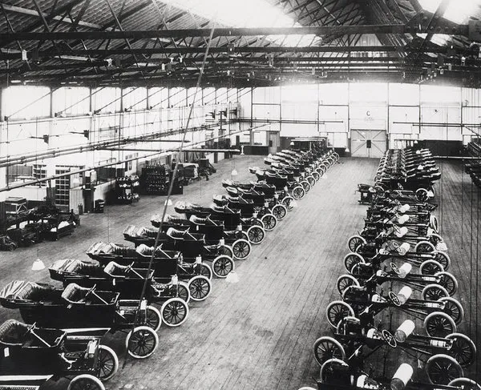
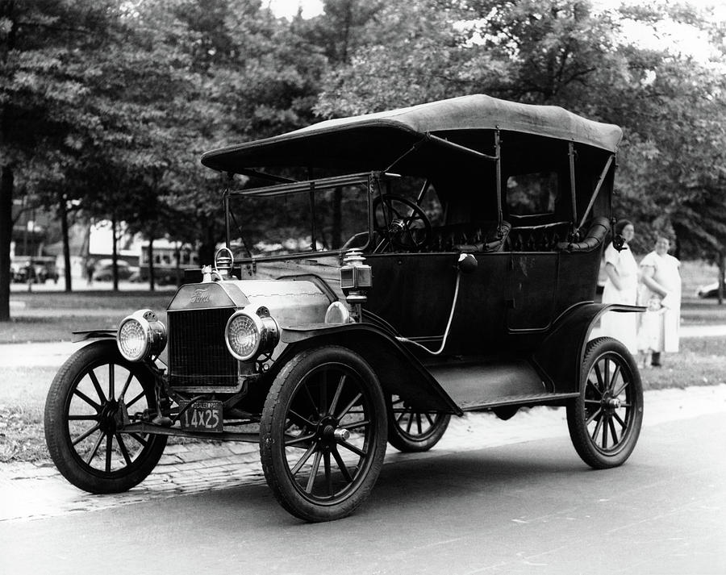
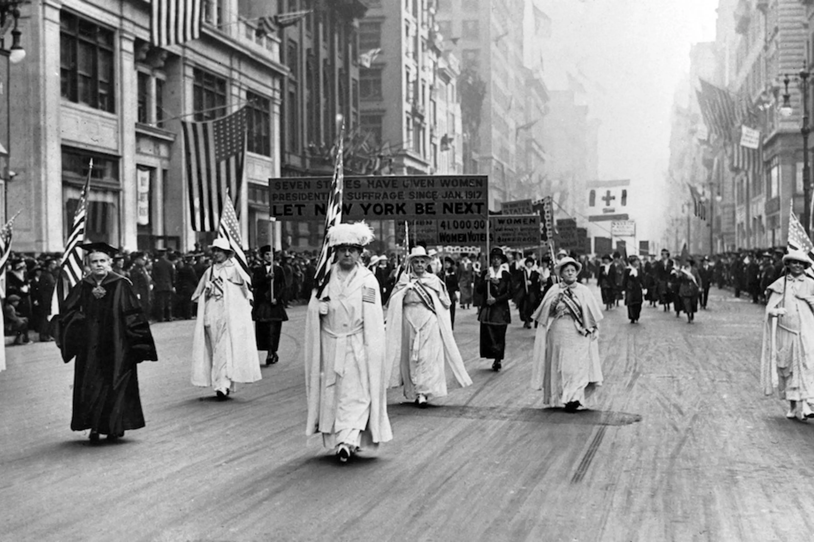
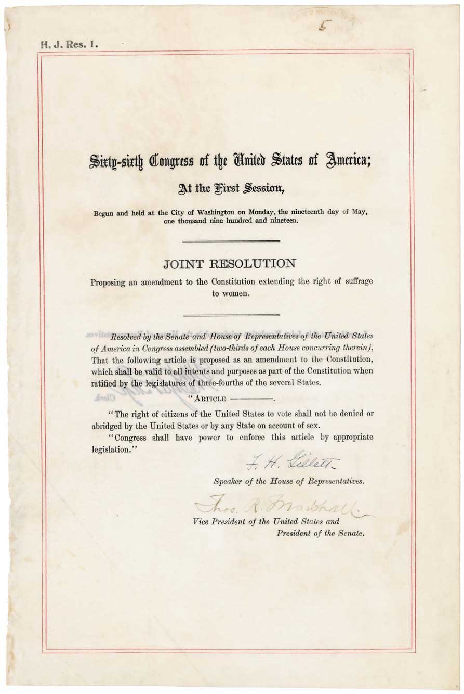
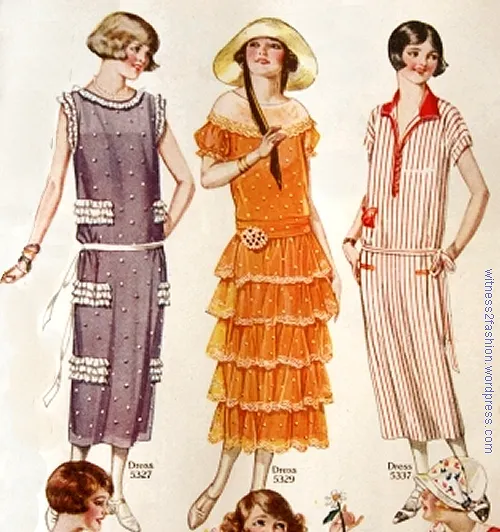
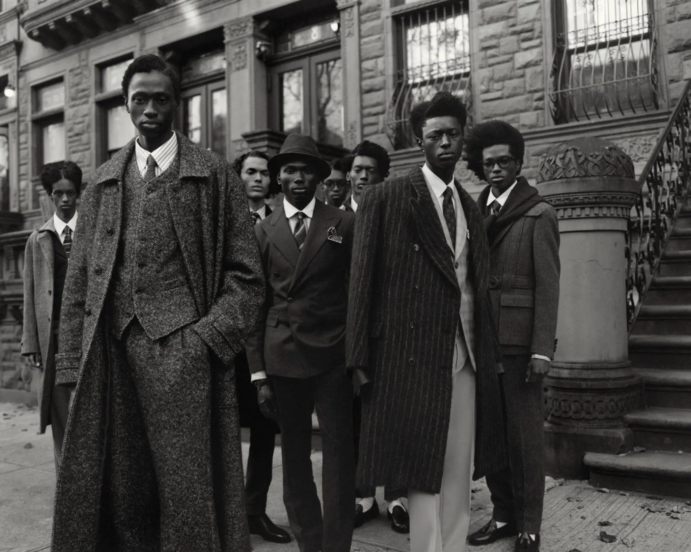
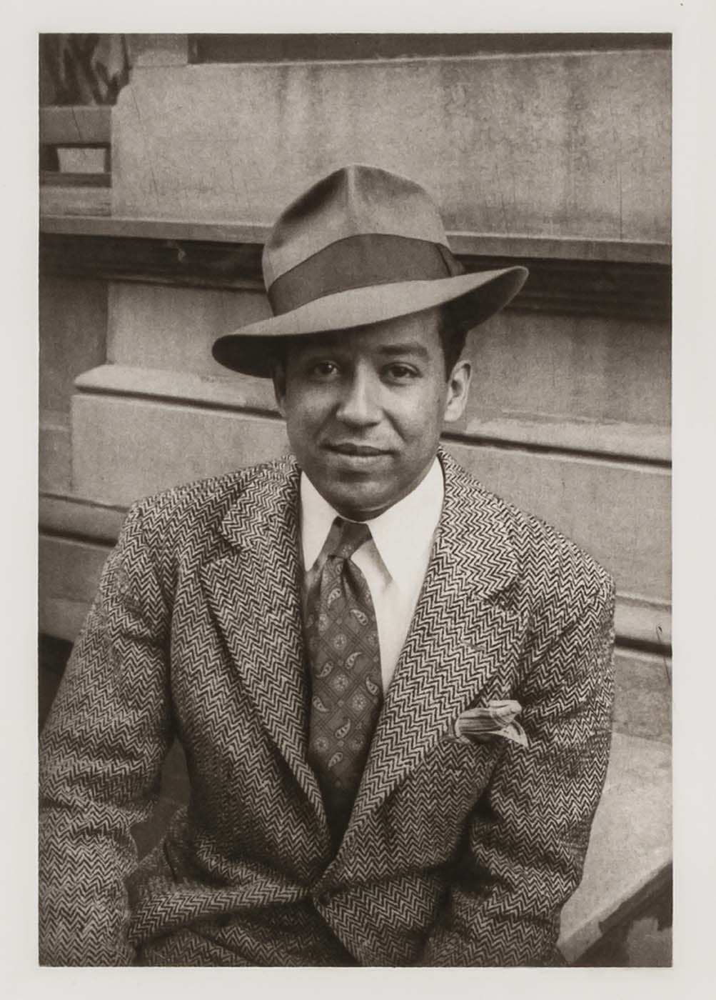
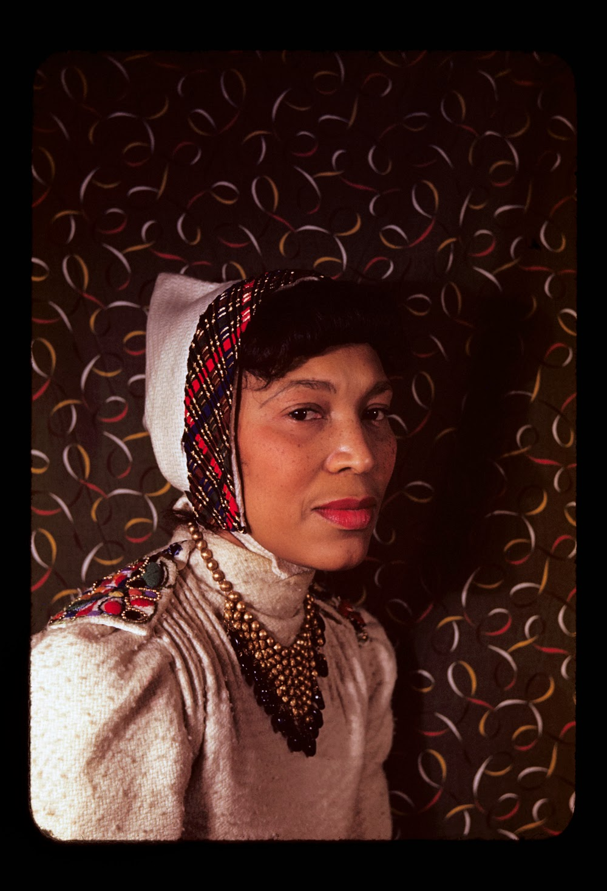
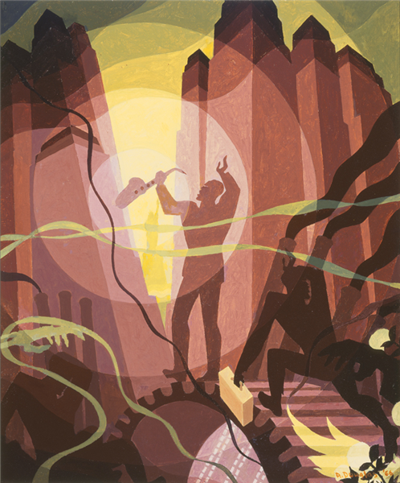
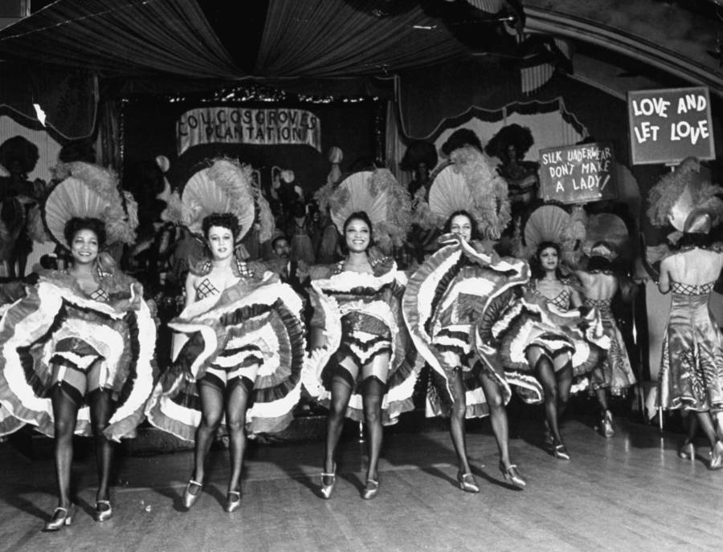

ESSENTIAL QUESTIONHow did prosperity, technology, and cultural change make the 1920s one of the most contradictory decades in American history?
New York City, 1925. Langston Hughes is still a young writer, and Harlem is becoming the center of Black American art, music, and ideas. Across the country, cars fill roads, radios enter living rooms, and advertisements tell Americans that buying new things is the path to a modern life.
New York City, 1925. Langston Hughes is a young writer. Harlem is becoming a center of Black art, music, and ideas. Across the country, cars fill roads. Radios enter homes. Ads tell people to buy new things.
The 1920s were full of contradictions. The economy boomed, but many farmers and Black Americans were left out. Women won the vote, but not all women could use it safely. Jazz changed the world, while segregation and racial violence continued. The decade looked bright, but it had shadows everywhere.
The 1920s were full of contradictions. The economy grew, but many people were left out. Women won the vote, but many women still faced barriers. Jazz changed the world, while racism continued. The decade looked bright, but it also had shadows.
CHAPTER ONE
BOOM TIMES AND MASS PRODUCTION

Ford Model T assembly line, Highland Park, Michigan, 1913. Library of Congress.
The 1920s economy grew quickly because businesses learned how to make products faster and cheaper. Mass productionMaking large numbers of the same product quickly. used machines, repeated tasks, and the assembly lineA factory system where each worker does one task.. Henry Ford's factories made the Model T car faster than older factories could. The price dropped, and more ordinary workers could buy cars.
The 1920s economy grew fast. Businesses made products faster and cheaper. Mass production used machines and repeated tasks. The assembly line helped Ford build cars quickly. Cars became cheaper, so more workers could buy them.
Cars changed daily life. People could live farther from work, shop in new places, and travel on weekends. Roads, gas stations, repair shops, and suburbs grew around the automobile. A new product had changed how Americans used space and time.
Cars changed daily life. People could live farther from work. They could shop and travel in new ways. Roads, gas stations, repair shops, and suburbs grew because of cars.
ConsumerismA culture that encourages people to buy more goods. also grew. Radios, refrigerators, washing machines, and vacuum cleaners became symbols of modern life. Many families bought goods on installment plansPaying for something over time in smaller payments.. That made life feel exciting, but it also pushed some families into debt.
Consumerism also grew. Radios, refrigerators, washing machines, and vacuum cleaners became signs of modern life. Many families used installment plans. They paid a little at a time. This helped them buy things, but it could also create debt.
The boom did not reach everyone. Farmers struggled after World War I because crop prices fell. Many Black Americans were blocked from better jobs by segregationSeparating people by race through law or custom. and discrimination. The 1920s were prosperous, but the prosperity was uneven.
The boom did not help everyone. Farmers struggled because crop prices fell. Many Black Americans were blocked from better jobs by segregation and unfair treatment. The 1920s were rich for some people, but not for all.
DID YOU KNOW

Ford Model T, c. 1919. Wikimedia Commons.
The Model T was nicknamed the "Tin Lizzie," and it was not fancy. That was the point. Ford wanted a car tough enough for bad roads and cheap enough for regular families. A machine that looked ordinary helped remake the whole country.
FAST FACTS
1920PROHIBITION BEGINS
19THAMENDMENT RATIFIED
1 IN 5AMERICANS OWNED A CAR BY 1927
1933PROHIBITION ENDS
CHAPTER TWO
PROHIBITION AND THE LAW NOBODY FOLLOWED
Federal agents destroying illegal alcohol during Prohibition, c. 1920s. Library of Congress.
In 1920, the Eighteenth AmendmentThe amendment that banned making and selling alcohol. began the national ban on alcohol. Supporters believed alcohol caused poverty, violence, and broken families. They thought a national law could make the country healthier and more moral.
In 1920, the Eighteenth Amendment banned making and selling alcohol. Supporters believed alcohol hurt families and communities. They thought the law would make the country better.
Instead, millions of Americans ignored ProhibitionThe 1920 to 1933 national ban on alcohol.. Illegal bars called speakeasiesSecret bars that sold illegal alcohol. opened in cities. BootleggersPeople who made or sold illegal alcohol. made fortunes. Criminal groups fought for control of the illegal alcohol business.
Instead, many Americans ignored Prohibition. Secret bars called speakeasies opened in cities. Bootleggers sold illegal alcohol and made huge profits.
Al Capone became the most famous example of organized crimeCriminal groups that work like businesses. during Prohibition. The law was supposed to stop drinking, but it helped create a huge illegal market. In 1933, the Twenty-First AmendmentThe amendment that ended Prohibition. ended Prohibition. It remains the only constitutional amendment that has been fully reversed.
Al Capone became the most famous crime boss of Prohibition. The law was supposed to stop drinking. Instead, it created a huge illegal market. In 1933, the Twenty-First Amendment ended Prohibition.
Big idea: When a law tries to ban something many people still want, it can create an illegal economy instead of solving the problem.
Big idea: A law can fail when many people refuse to follow it.
CHAPTER THREE
WOMEN WIN THE VOTE AND REWRITE THE RULES

Women's suffrage parade, early 1900s. Library of Congress.
The Nineteenth AmendmentThe 1920 amendment that gave women voting rights. was ratified in 1920 after more than 70 years of organizing. SuffragistsPeople who fought for women's right to vote. marched, wrote speeches, met with politicians, went to jail, and faced public ridicule. The victory was historic.
The Nineteenth Amendment was ratified in 1920. Women had fought for voting rights for more than 70 years. Suffragists marched, gave speeches, met with leaders, and went to jail. Their victory was historic.
The 1920s also brought new ideas about women's public lives. The flapperA young 1920s woman known for modern fashion and independence. became a symbol of change. Flappers wore shorter skirts, cut their hair, danced in public, drove cars, and pushed against older rules about how women should act.
The 1920s brought new ideas about women's lives. The flapper became a symbol of change. Flappers wore modern clothes, cut their hair, danced in public, and challenged older rules.
But the vote did not reach all women equally. Many Black women in the South still faced poll taxesFees used to stop poor people from voting., literacy testsReading tests used to block voters unfairly., and violence. The Nineteenth Amendment was a major step, but the fight for equal voting rights continued.
But not all women could vote safely. Many Black women in the South faced poll taxes, literacy tests, and violence. The Nineteenth Amendment was a big step, but the fight for voting rights was not over.

The 19th Amendment, ratified in 1920. National Archives.

Young women in 1920s fashion. Wikimedia Commons.
CHAPTER FOUR
THE HARLEM RENAISSANCE TRANSFORMS AMERICA

Harlem, New York City, c. 1930. Library of Congress.
Harlem is a neighborhood in northern Manhattan, but in the 1920s it became much more than a neighborhood. It became the center of the Harlem RenaissanceA Black cultural movement centered in Harlem., a burst of Black art, music, writing, and political thought.
Harlem is a neighborhood in New York City. In the 1920s, it became much more. It became the center of the Harlem Renaissance, a major movement in Black art, music, writing, and ideas.
The movement grew from the Great MigrationThe movement of Black Southerners to Northern cities.. Many Black Americans moved north to escape Jim Crow laws, racial violence, and limited jobs in the South. They brought music, stories, faith, anger, humor, and imagination with them.
The movement grew from the Great Migration. Many Black Americans moved north from the South. They wanted to escape racism and find better jobs. They brought music, stories, and ideas with them.
JazzA music style based on rhythm, improvisation, and feeling. became the sound of the decade. Duke Ellington, Louis Armstrong, and Bessie Smith helped make Black music central to American culture. Writers like Langston Hughes and Zora Neale Hurston showed that Black life, language, and beauty belonged at the center of American literature.
Jazz became the sound of the 1920s. Duke Ellington, Louis Armstrong, and Bessie Smith helped change American music. Writers like Langston Hughes and Zora Neale Hurston showed the beauty and power of Black life and language.
LANGSTON HUGHES
Poet who used the rhythm of jazz and blues to write about Black life with honesty and pride.
ZORA NEALE HURSTON
Writer and folklorist who collected Black stories, songs, and speech from Southern communities.
DUKE ELLINGTON
Composer and bandleader whose orchestra helped make jazz a respected American art form.
MARCUS GARVEY
Leader who promoted Black pride, economic self-sufficiency, and Pan-African unity.

Langston Hughes, photographed by Carl Van Vechten, 1936. Library of Congress.

Zora Neale Hurston, photographed by Carl Van Vechten, 1938. Library of Congress.
ART SPOTLIGHT

Aaron Douglas, Aspects of Negro Life: Song of the Towers, 1934. New York Public Library / Schomburg Center.
Douglas painted a Black saxophone player caught between a giant industrial gear, a hand reaching for freedom, and the lights of the modern city. It looks like a celebration, but it also asks a sharper question: who gets to enjoy the modern world that Black labor and Black music helped create?
PRIMARY SOURCE MOMENT
LANGSTON HUGHES CLAIMS AMERICA
PRIMARY SOURCE
"I, too, sing America... Tomorrow, I'll be at the table when company comes."
Langston Hughes, "I, Too," 1926
Hughes wrote during a decade when Black artists were transforming American culture while segregation still pushed Black Americans to the margins. His poem argues that Black Americans were not outside the nation. They were America too.
Question 1: What does the kitchen/table image represent in plain language?
Question 2: How does this poem show the contradiction of the 1920s?
THEN AND NOW
The 1920s did not disappear. Its music, cars, advertising, voting-rights debates, and arguments over who belongs are still part of American life.
THEN

Harlem jazz scene, c. 1920s to 1930s. Wikimedia Commons.
NOW
Apollo Theater, Harlem, New York City. Wikimedia Commons.
Langston Hughes said, "I, too, sing America." How can you tell whether a country has actually listened?